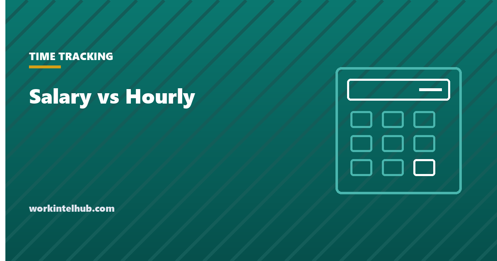

Salary vs Hourly

Salaried pay is a fixed amount per year, paid in equal instalments whatever the hours. Hourly pay is a rate multiplied by hours worked, with overtime on top. That is the whole definitional difference, and it is not the difference that matters. What matters is whether the job is exempt from overtime, which is a legal question about duties and pay level that the word "salary" does not settle, and how many hours the salaried version of the job actually takes, which turns a $62,000 salary into $28 an hour at 45 hours a week and $24 at 52.
The calculator compares two offers on the number that counts: total annual value divided by hours actually worked. The rest of the page covers the practical differences, the exemption rules and 2026 thresholds that decide whether a salaried employee is owed overtime, and how to choose when both are on the table.
Salary vs hourly comparison calculator
Salary is divided by the hours actually worked, not the hours in the contract; that is the number to compare with an hourly rate. Overtime is applied at the multiplier for hours over 40 in a week under federal law; California and a few other states use daily thresholds.
The practical differences
| Salaried | Hourly | |
|---|---|---|
| Pay for extra hours | None if exempt; overtime if non-exempt salaried | Overtime at 1.5× over 40 hours a week (daily in some states) |
| Pay for short weeks | Full salary in any week with work done (exempt) | Only hours worked; sent home early means less pay |
| Predictability | Same paycheck every period | Varies with schedule and overtime |
| Timekeeping | Often not required for exempt staff | Required; every hour recorded |
| Benefits | Usually the full package | Often the same for full-time; thinner or absent for part-time |
| Paid time off | Commonly more generous | Commonly less, and unpaid if not accrued |
| Schedule control | More flexibility, less boundary | Fixed schedule, clearer boundary |
| Advancement | Salaried roles are more often on management tracks | Moving up often means converting to salary |
The first row is the one people underestimate. An exempt salaried employee who works 50 hours in a busy week is paid the same as in a 40-hour week; an hourly employee is paid 15 hours' overtime premium on top. Over a year in which the salaried role averages 45 hours, the hourly employee at the "same" rate earns about 19 per cent more, which is why the calculator asks how many hours the salaried job really takes and reports the effective hourly rate.
Salaried does not mean exempt
Paying a salary does not remove the right to overtime. Under the Fair Labor Standards Act, an employee is exempt from overtime only if three tests in 29 CFR Part 541 are all met: paid on a salary basis, paid at least the salary threshold, and performing executive, administrative or professional duties as defined in the regulation. A salaried receptionist, a salaried junior analyst doing routine work under close supervision, or a salaried "manager" who spends the shift on the same tasks as the people they supervise is non-exempt and owed overtime on the salary, converted to an hourly rate. Our exempt versus non-exempt entry covers the duties tests.
The federal threshold is $684 a week ($35,568 a year), the 2019 level, after the 2024 rule raising it was vacated and formally rescinded by the Department of Labor in May 2026. Several states set their own, higher thresholds, and where the state figure is higher it applies.
| Jurisdiction | 2026 minimum salary for exemption | Basis |
|---|---|---|
| Federal (FLSA) | $684 per week, $35,568 per year | 29 CFR 541.600 |
| California | $1,352 per week, $70,304 per year | Twice the state minimum wage for full-time work |
| New York (NYC, Long Island, Westchester) | $1,275 per week, $66,300 per year | Executive and administrative exemptions |
| New York (rest of state) | $1,199.10 per week, $62,353.20 per year | Executive and administrative exemptions |
| Washington | $1,541.70 per week, $80,168.40 per year | 2.25 times the state minimum wage |
| Colorado, Alaska, Maine and others | Above federal; indexed annually | State rules |
An employer that pays a salary below the applicable threshold, or to someone whose duties do not qualify, has a non-exempt salaried employee, and must track their hours and pay overtime at the regular rate derived from the salary. The time and a half calculator handles that conversion, and the salary to hourly calculator covers the hourly rate itself.
Choosing between them
When both are offered, or when an employer is deciding how to structure a role, the calculator's total-value line is the start, and three further questions settle it.
- How many hours will the salaried version really take? Ask the people doing it. If the honest answer is 50, the effective rate is 20 per cent below the headline and the hourly offer with overtime is often ahead.
- How variable are the hourly hours? A guaranteed 40 with regular overtime beats a salary; a schedule that swings between 25 and 45 with no guarantee does not, whatever the rate. Ask for the guarantee in writing, or see what the schedule template shows the pattern to be.
- What comes with each? Benefits, paid leave, bonus eligibility and retirement match are often richer on the salaried side, and they compound. The calculator has a line for each; fill it from the offer, not from assumption.
For employers the structural choice has a legal edge. Converting an hourly role to salary to avoid overtime only works if the duties test is met; otherwise it creates a non-exempt salaried employee whose overtime is now harder to calculate and easier to forget, which is a common source of wage claims. Converting a salaried role to hourly is lawful and sometimes welcomed, provided the offer letter or a written notice records the change and, in states with pay notice rules, the state form is issued.
What changes on the paycheck
A salary is paid in equal instalments: $62,000 bi-weekly is $2,384.62 every two weeks, semi-monthly is $2,583.33 twice a month, and the two produce the same annual total through different-sized checks. Hourly pay is calculated per period from recorded hours, so the check varies and a period with a holiday or a short week is smaller unless the time is paid. Overtime for hourly staff is calculated by workweek, not by pay period, which is why a bi-weekly paycheck can carry overtime from one week and none from the other; our hours calculator works in the same unit.
Both are subject to the same withholding: federal and state income tax, 6.2 per cent Social Security up to the Social Security wage base ($184,500 in 2026) and 1.45 per cent Medicare with no cap. Neither form of pay changes the tax; only the amount does.
Key takeaways
- Salary is fixed pay per year; hourly is rate times hours plus overtime. The real comparison is total annual value divided by hours actually worked.
- A salary does not make a job exempt from overtime. Exemption needs the salary basis, the salary threshold and the duties test together.
- The federal threshold is $684 a week after the 2024 rule's rescission; California ($70,304), New York ($62,353 to $66,300) and Washington ($80,168) set higher 2026 floors.
- An exempt employee averaging 45 hours earns about 19 per cent less per hour than an hourly employee at the same nominal rate with overtime.
- Compare benefits, paid leave and bonus eligibility line by line; they are usually richer on the salaried side and they compound.
- Converting hourly staff to salary to avoid overtime fails unless the duties test is met, and creates non-exempt salaried employees whose overtime is easy to miss.
Frequently asked questions
Is it better to be paid salary or hourly?
It depends on hours and extras. Salary gives a predictable paycheck and usually richer benefits and leave, but no pay for extra hours if the role is exempt. Hourly pays for every hour and overtime at time and a half, but varies with the schedule. Divide each offer's total annual value by the hours it really takes; the higher effective rate wins.
Do salaried employees get overtime?
Only if they are non-exempt. A salaried employee is exempt from overtime only when paid at least the applicable threshold ($684 a week federally, higher in California, New York, Washington and several other states) and performing executive, administrative or professional duties as defined in the regulations. Salaried employees who fail either test are owed overtime.
How do you convert a salary to an hourly rate?
Divide the annual salary by the hours worked in a year. The standard assumption is 2,080 hours (40 hours times 52 weeks), so $62,000 is $29.81 an hour. If the role really takes 45 hours a week, divide by 2,340 instead: $26.50. The second figure is the one to compare with an hourly offer.
What is the minimum salary to be exempt in 2026?
Federally, $684 a week or $35,568 a year. California requires $70,304, Washington $80,168.40, New York $66,300 in the New York City area and $62,353.20 elsewhere for executive and administrative exemptions. Where the state figure is higher, it applies. Meeting the salary is necessary but not sufficient; the duties test must also be met.
Can an employer switch an employee from hourly to salary?
Yes, with notice, and in states with pay notice laws a written notice of the change. But the switch only removes overtime if the role meets the exemption tests. If it does not, the employee is salaried non-exempt and still owed overtime on the salary converted to an hourly rate.
Are salaried employees paid for holidays and short weeks?
Exempt salaried employees receive the full salary for any week in which they do any work, with narrow exceptions, so a holiday week pays the same. Hourly employees are paid for hours worked plus any paid holiday the employer offers; a short week means a smaller check unless the time is paid.